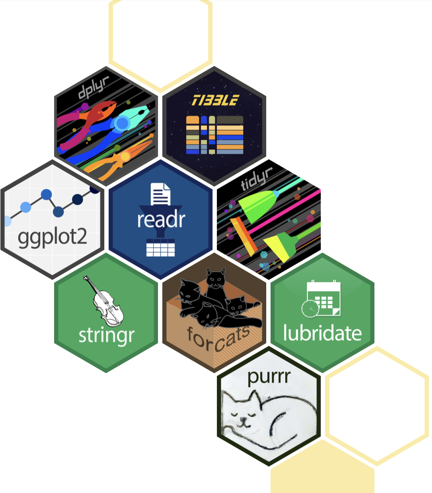
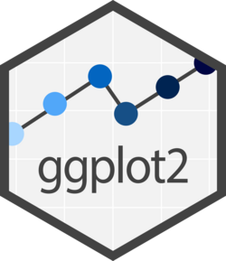
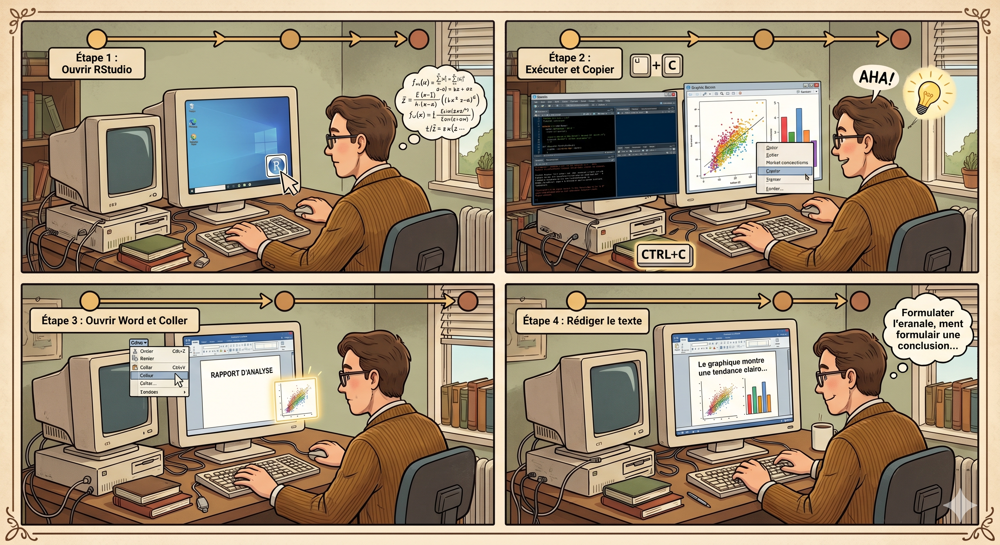
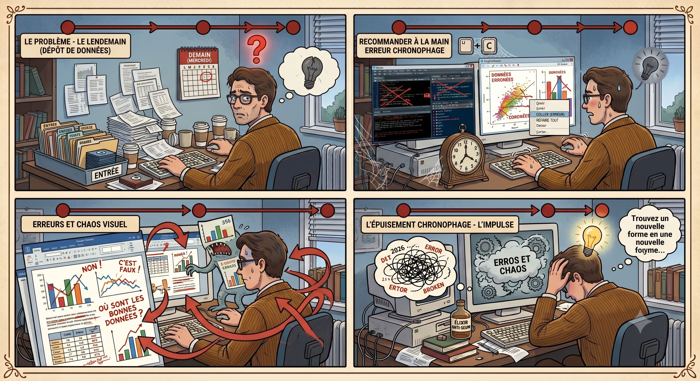
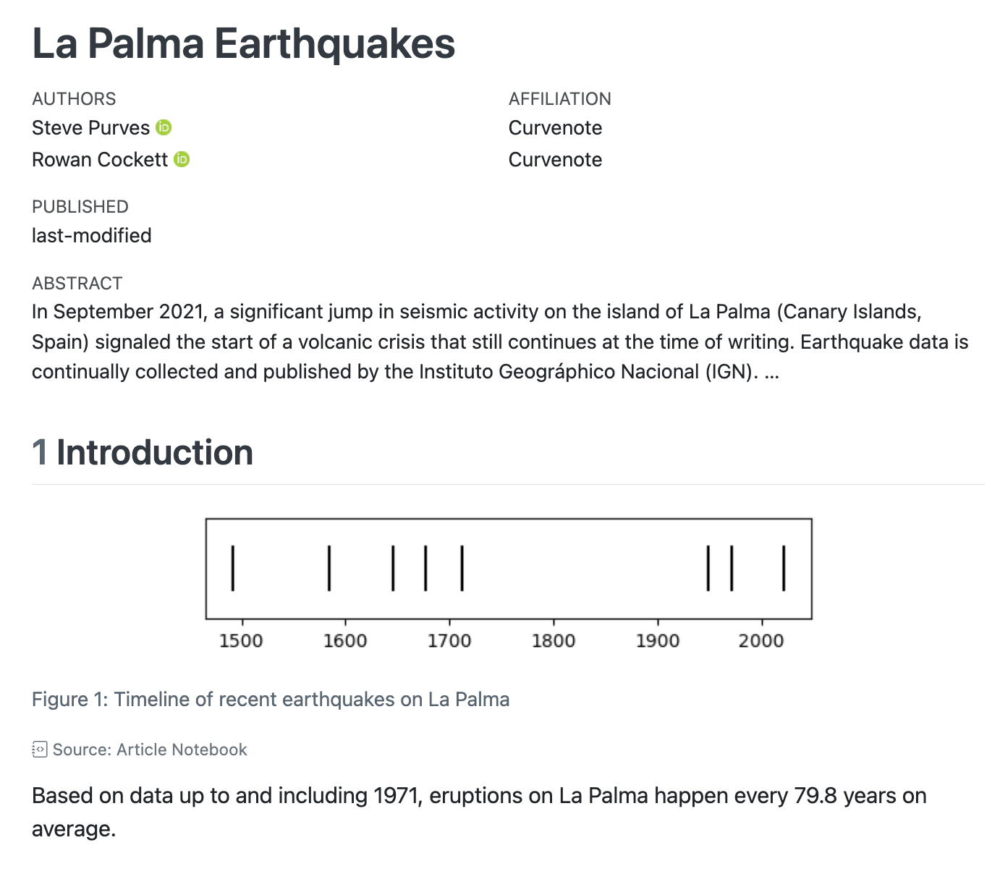
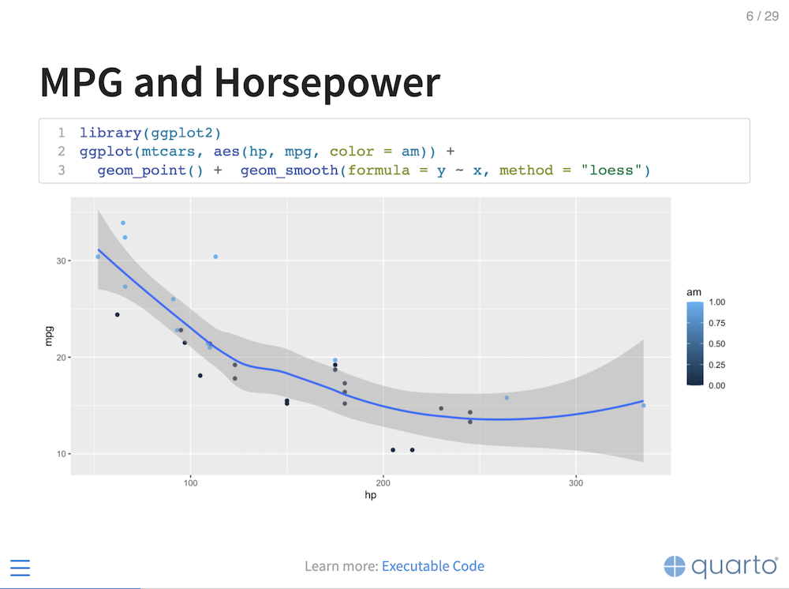
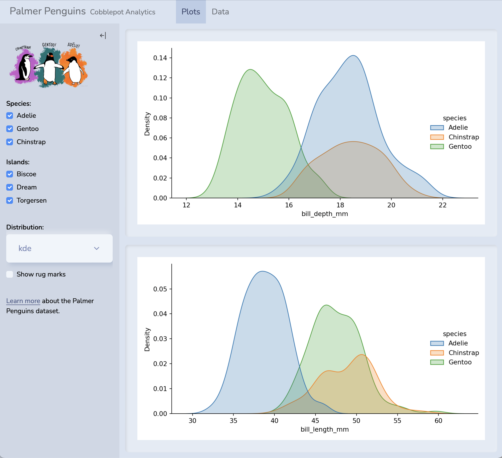
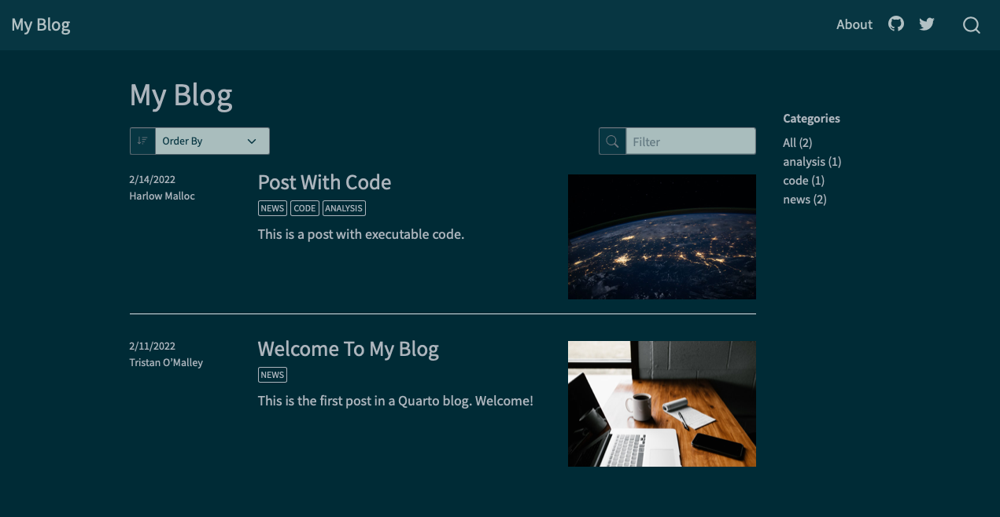

Seum-ception : Le Closeread qui s’auto-analyse
Infiltration dans le code source du projet primé au Hackaviz 2026
Seum-ception : Le Closeread qui s’auto-analyse
Infiltration dans le code source du projet primé au Hackaviz 2026
Le Tidyverse
Pendant longtemps, le R de base avait la réputation d’avoir une syntaxe complexe et parfois incohérente. En 2016, une équipe de développeurs (menée par Hadley Wickham) a standardisé la pratique de R en créant le Tidyverse.
Qu’est ce que c’est ? Une collection de packages conçus pour travailler ensemble et partageant la même philosophie et la même structure de code.
La philosophie “Tidy” : les données doivent être propres (chaque variable est une colonne, chaque observation est une ligne).
Parmi les piliers, on retrouve ggplot2, la référence absolue pour créer des graphiques professionnels et élégants.
On utilise également dplyr pour manipuler, filtrer et transformer les données avec des mots simples (filter, select, mutate).
Ainsi que tidyr pour structurer le tout.
L’opérateur Pipe (%>% ou |>) : C’est la véritable révolution syntaxique. Il permet d’enchaîner les opérations de manière fluide, lisible comme une phrase (ex : Prendre les données \(\rightarrow\) Filtrer \(\rightarrow\) Calculer la moyenne).
L’impact de cette révolution : Le Tidyverse a rendu R beaucoup plus accessible, moderne et rapide à apprendre. Il a transformé R d’un outil purement académique en un standard industriel de la Data Science.




La révolution Quarto
Avant, un analyste ouvrait son script R. Il l’exécutait, copiait le graphique obtenu, ouvrait Microsoft Word, collait le graphique, puis rédigeait son texte.
Le problème ? Si les données changent le lendemain, il faut tout recommencer à la main. C’est une source d’erreurs chronophage.
C’est là qu’intervient Quarto
Mais qu’est-ce que c’est ? C’est un système de publication scientifique et technique open source.
Il permet de rédiger en utilisant le format Markdown, et de créer du contenu dynamique avec Python, R, Julia et Observable.
La véritable puissance de Quarto réside dans sa compilation. À partir d’un seul et même document, vous pouvez :
Publier des articles et des rapports de qualité professionnelle.
Générer des diaporamas pour vos présentations.
Concevoir des dashboards pour piloter vos données.
Ou encore créer des sites web et des blogs entièrement reproductibles.
Regardons comment se structure ce fichier “Tout-en-un”. Tout en haut, on retrouve l’en-tête YAML qui gère les métadonnées et définit le format de sortie.
Du texte normal : écrit très simplement en Markdown pour documenter notre analyse sans se soucier du code informatique.
Des Chunks (Blocs de Code) : ce sont ces petites fenêtres intégrées au milieu du texte qui contiennent ici nos instructions de filtrage et de visualisation du Tidyverse.







---
title: "Mon Premier Document Quarto"
format: html
editor: visual
---
## Introduction
Voici du **texte normal**. Il s'agit d'un paragraphe écrit très simplement
pour documenter notre analyse. Quarto permet de mettre en forme facilement
le texte (comme ce mot en **gras**) sans se soucier du code.
## Analyse des données
```{r}
#| message: false
#| warning: false
library(tidyverse)
# Un exemple de script R avec le Tidyverse
mpg %>%
filter(cyl == 4) %>%
ggplot(aes(x = displ, y = hwy)) +
geom_point(aes(color = class)) +
labs(title = "Consommation des voitures à 4 cylindres")
```
📚 Reconstruire la matrice chez vous (Liens & Installation)
Si vous voulez cloner ce projet ou créer votre propre scrollytelling, voici le guide de démarrage rapide :
| Outil / Ressource | Ce qu’il faut installer / Consulter | Lien Officiel |
|---|---|---|
| Le Cœur (R) | Télécharger l’environnement de calcul R complet. | CRAN Project |
| L’Habitacle (RStudio) | Installer l’IDE RStudio Desktop (édité par Posit). | Posit Download |
| Le Châssis (Quarto) | Installer le Quarto CLI (le moteur de compilation). | Quarto Get Started |
| La Caméra (Closeread) | L’extension de Scrollytelling officielle pour Quarto. | Closeread Guide |
| Le Dessin (OJS Plot) | La documentation pour coder les graphiques réactifs. | Observable Plot |
Pour installer Closeread dans votre projet : Ouvrez votre terminal à la racine de votre dossier de travail Quarto et exécutez simplement la commande suivante :
quarto add qmd-lab/closeread
*Dataviz créée par Faustin LAFAGE.